Tokyo OSS Party!!
2024-01-28 福井会場
2. 成果物
参加者はチームを組み、開発した作品をGitHubにてOSSとして公開。
4. 日時
Day1:2024年1月28日(日) 10:30-17:00
Day2:2024年2月25日(日) 13:00-16:00
5. タイムスケジュール(予定)
Day1
10:00 会場オープン jig.jp 開発センター2Fセミナールーム
10:30 地域課題解決キックオフ＆アイデアソンスタート
12:00 予定 ランチ（お弁当事前申し込みで支給）
13:00 予定 ハッカソン
17:00 予定 解散
Day2
チーム発表
審査
表彰 優秀賞1件、審査員賞（地域課題賞、IT技術賞）2件
詳細は後日掲載します
9. 参加申込み期間
定員になり次第終了、1月26日(金)まで
10. 各自治体の資料
I. 杉並区
「スギナミ・ウェブ・ミュージアム」のプロモーション
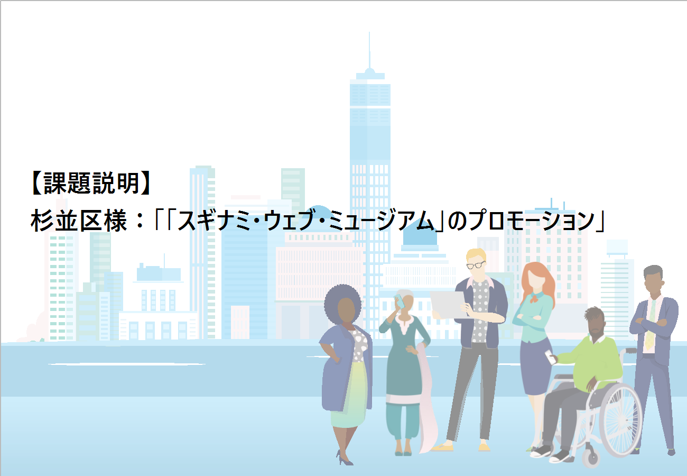
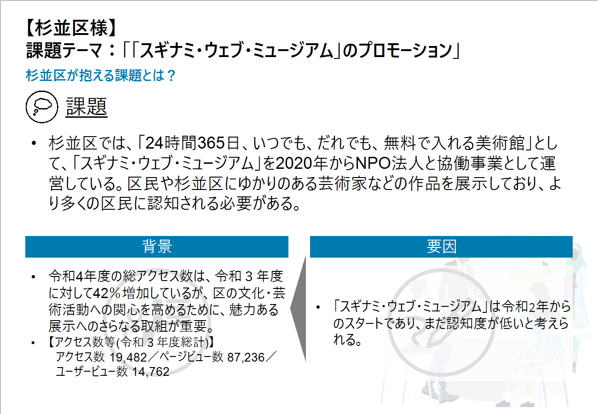
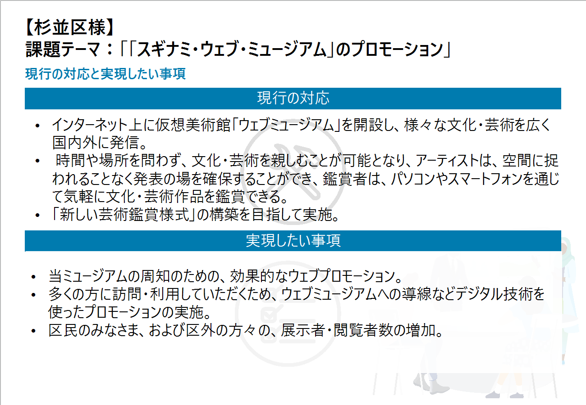
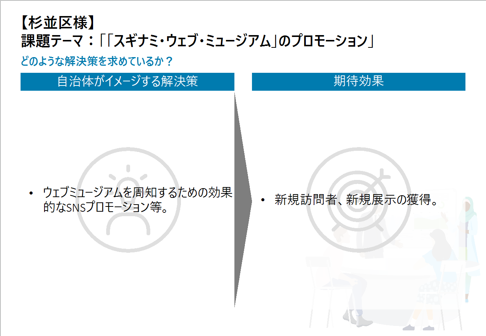
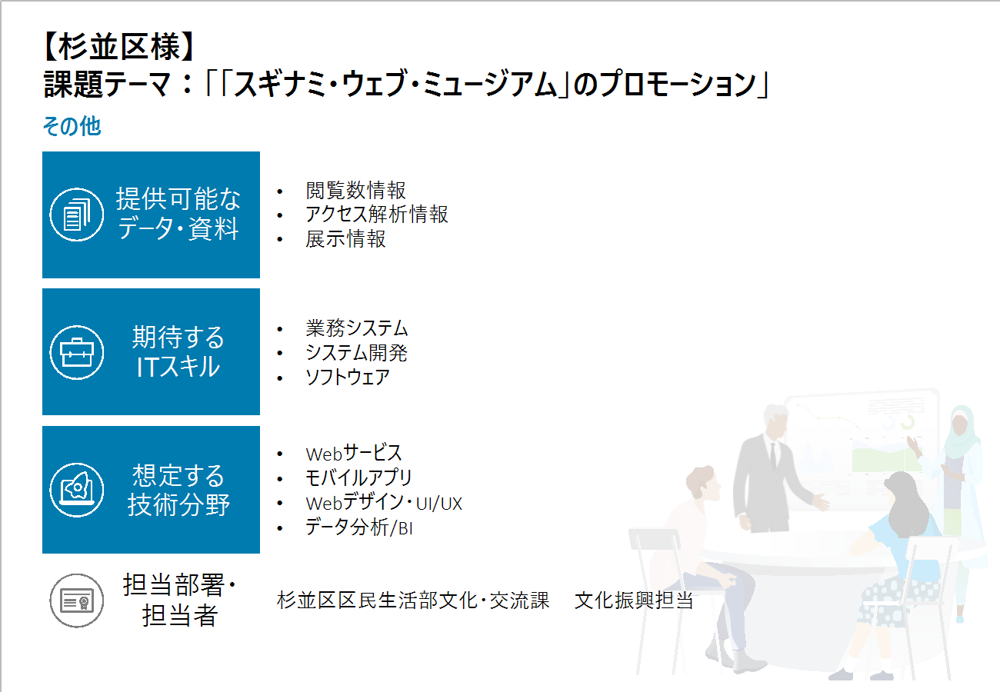
II. 中野区
公演情報のデジタル化
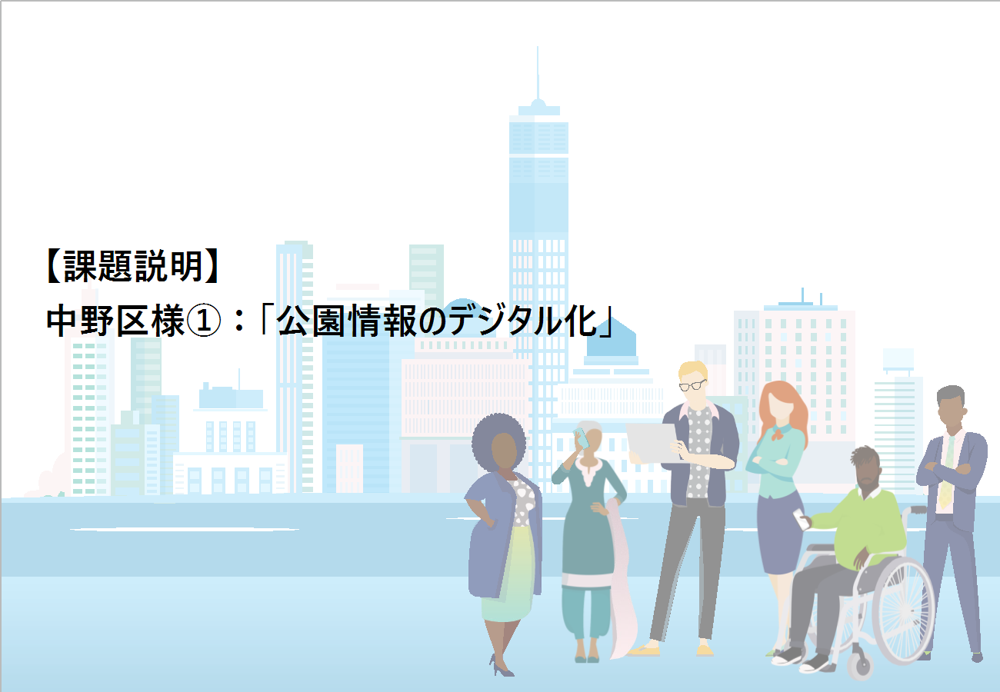
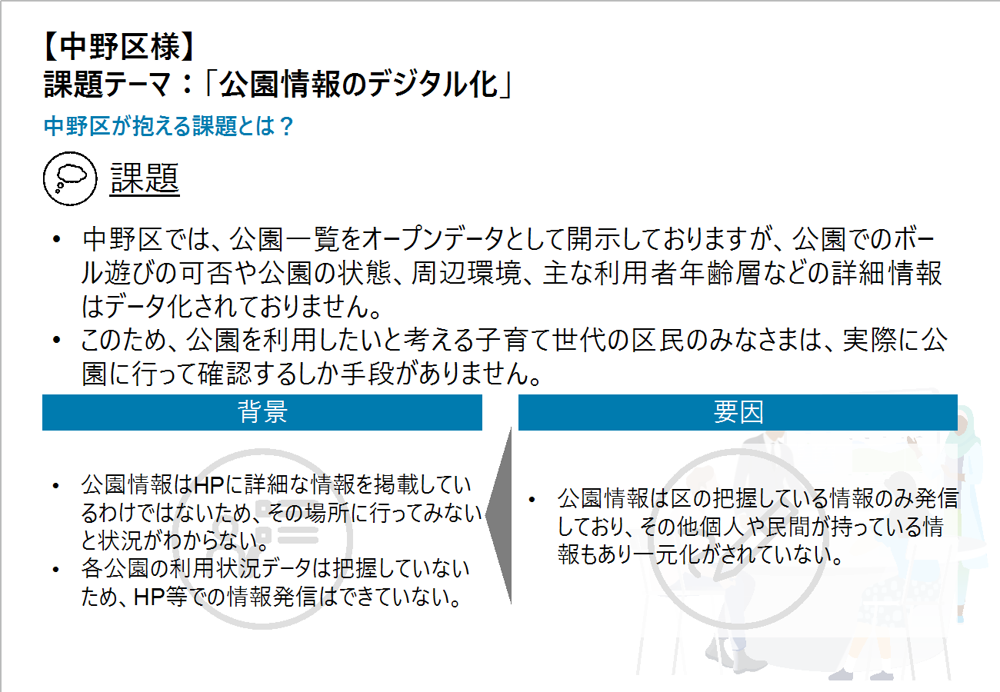
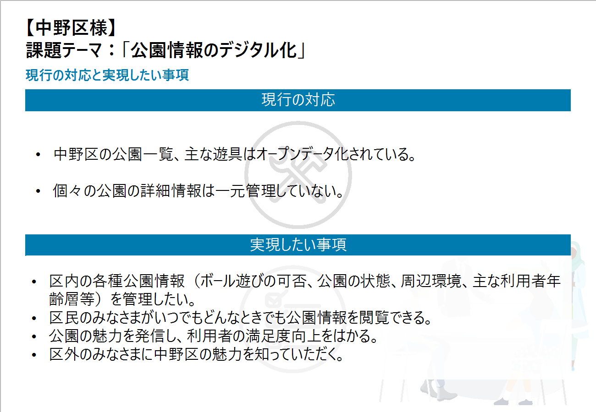
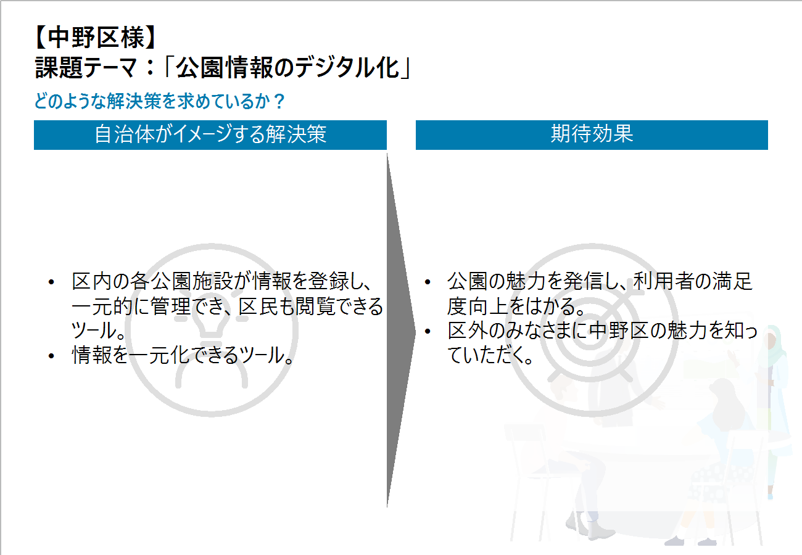
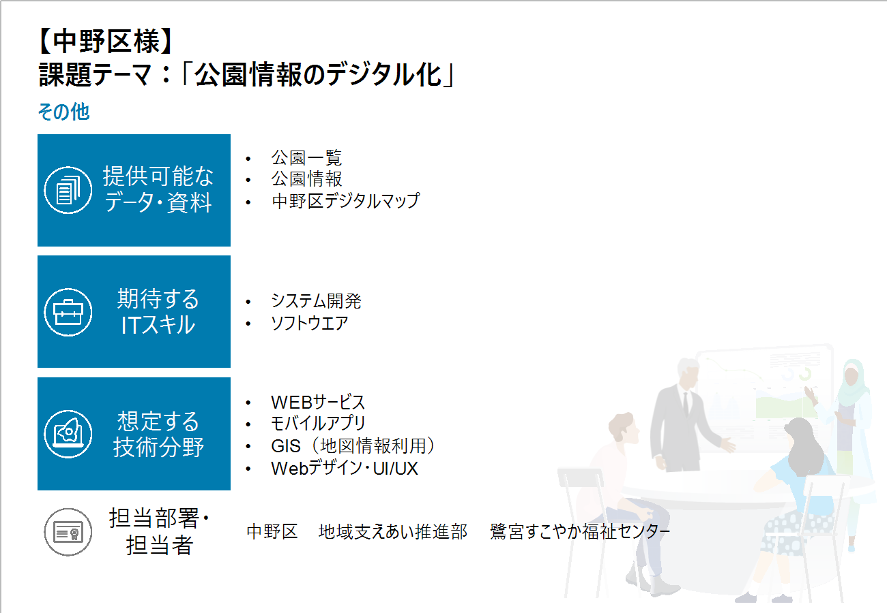
III. 調布市
スポーツイベント情報の一元発信
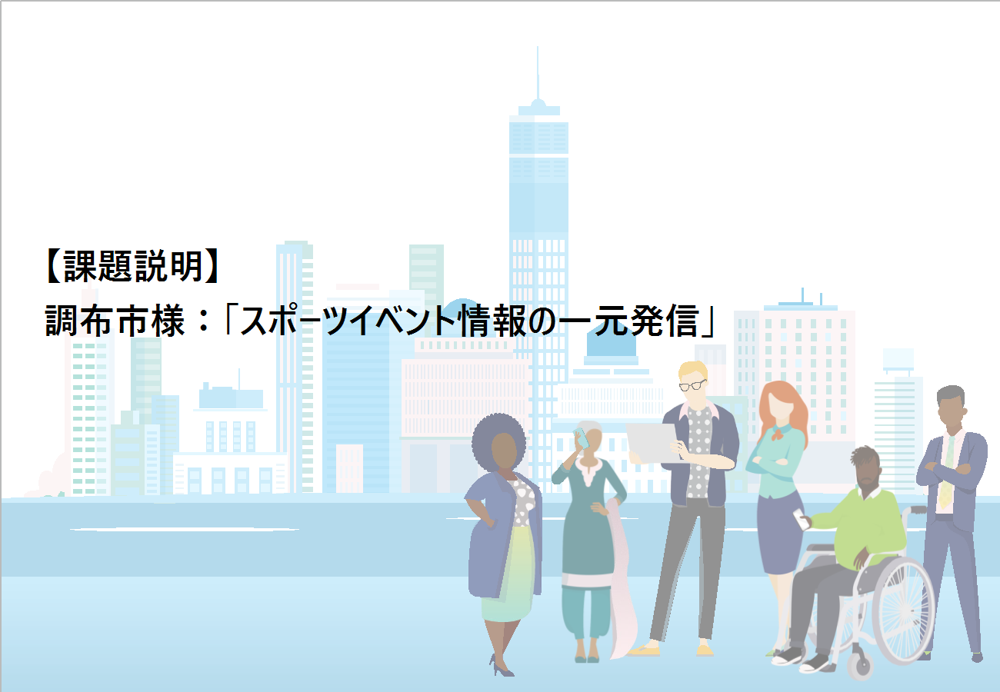
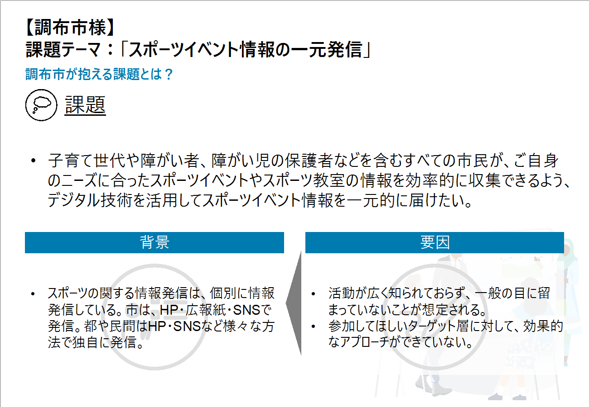
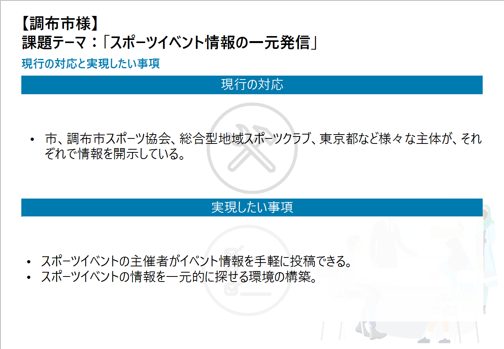
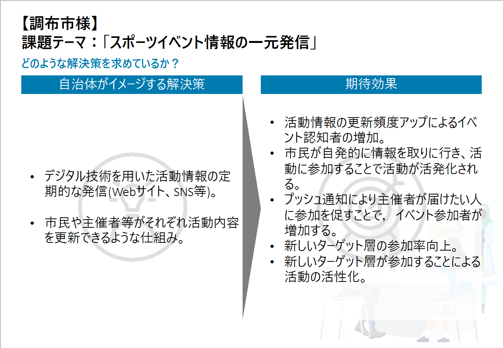
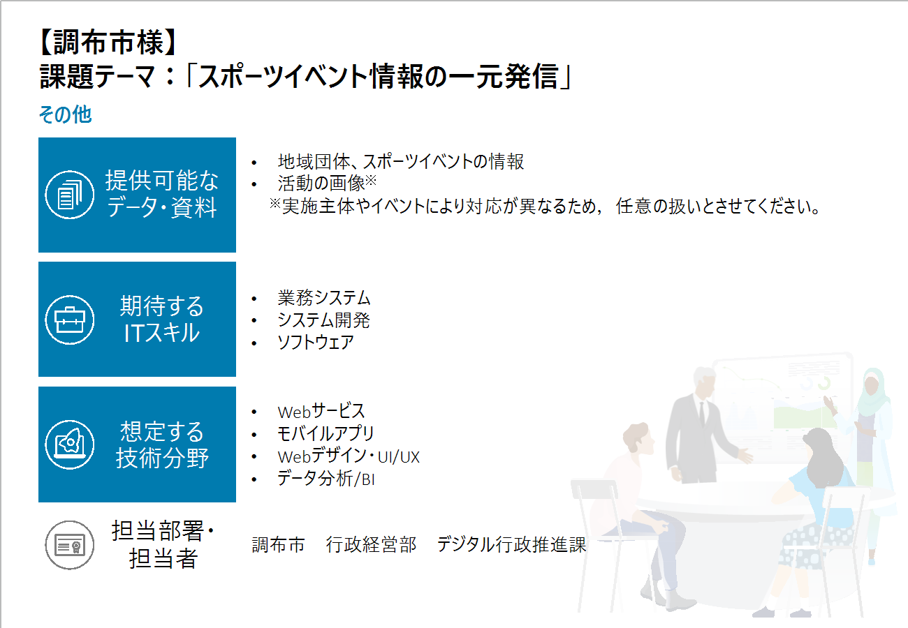
 昨年度の様子
昨年度の様子